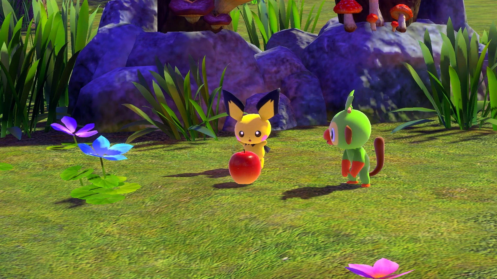

PhotoSnap
Veja as marcações que foram feitas na foto.

Das marcações
ocultar marcações:
x:
y:
largura:
altura:
título:
conteúdo:
cor do texto:
formato da marcação:
retangular
oval
Da foto
filtro:
nenhum
tom de cor sépia
cores invertidas
escala de cinza
super contraste
borragem
rotação de tonalidade
selecione a sua própria imagem: